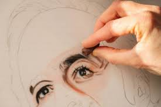
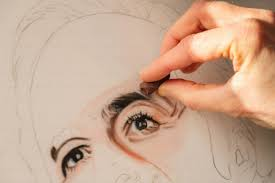
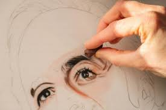
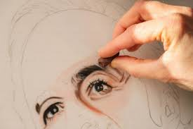

Drawing is a calming and fun hobby. It's something that you can spend as much or as little time on and be done almost anywhere, making it very convenient. Whether you're a 4 or 90 it's a hobby that anyone is able to do. And in the end you are left with a creation that is filled with your emotions, passions, likings, all portrayed on a simple piece of paper. Drawing is a very fun and creative way to express yourself and show your art skills. Drawing online can also be an option if you don’t like drawing on paper. Drawing online is also really fun and can make it easier from time to time. It is more convenient since you only need an iPad and drawing pen. Both ways work, it just matters what you prefer to use.